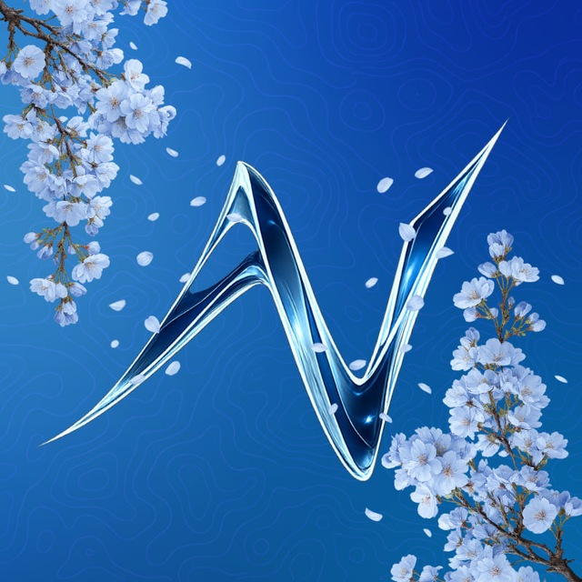
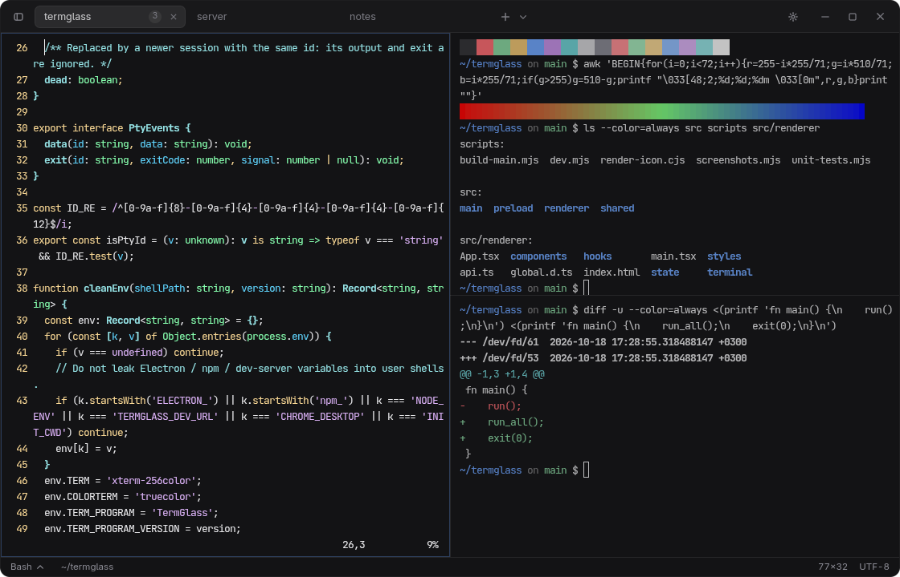
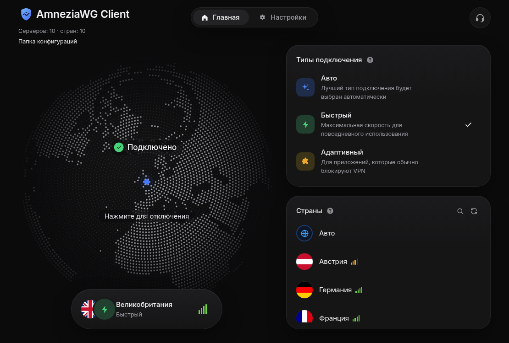
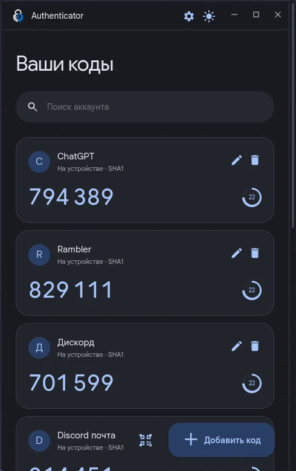

nettixdev
@NettixDev-ctrl
страдаю хуйнёй
~ $ whoami
nettixdev
~ $ uname -r
6.18-cachyos-lts
~ $

@NettixDev-ctrl
страдаю хуйнёй
Минималистичный терминал в стиле стекла. Настоящие шеллы, вкладки и сплиты, палитра команд, темы и переключение шелла в один клик.
Electron / xterm.js / node-pty
Свободный клиент AmneziaWG 3.x. Страны строятся из твоих .conf-файлов, «подключено» показывается только после реального рукопожатия. Есть kill switch и раздельное туннелирование. Без аккаунтов и телеметрии.
amneziawg-go / nftables
Приложение для двухэтапной аутентификации. TOTP-коды считаются локально, ключи не покидают машину. Material Design 3, QR прямо с экрана, импорт из Google Authenticator.
Electron / TOTP / Material Design 3
Топографический фон реагирует на курсор, а точки вокруг аватара тянутся к нему. Один файл, никаких библиотек.
HTML / CSS / canvas


